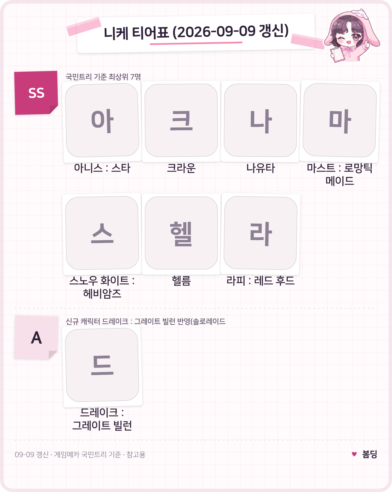

니케 티어표 최신순위, 드레이크 그레이트빌런 티어까지 총정리
니케 티어표, 다시 한 번 궁금해지신 분들 많으실 텐데요. 얼마 전에 신규 캐릭터 '드레이크 : 그레이트 빌런'이 추가되면서 순위표에도 슬쩍 변화가 생겼거든요. 저도 이번에 드레이크 소식 보고 궁금해서 직접 찾아봤는데요, 오늘은 게임메카 국민트리가 2026년 9월 9일 갱신한 최신 데이터를 기준으로 승리의 여신: 니케 티어표를 한 번 정리해볼게요.
결론부터 말씀드리면, 기존 SS 티어 7명 자리는 그대로 유지됐고요, 새로 들어온 드레이크 : 그레이트 빌런은 솔로 레이드·기업타워 기준 A 티어로 붙었어요. 다만 이 표는 확정된 공식 순위가 아니라 커뮤니티가 모아 놓은 참고 자료라는 점, 먼저 짚고 시작할게요.
이 티어표는 대체 어떤 기준으로 만들어졌을까요
이번 정리는 게임메카 국민트리가 2026년 9월 9일 갱신한 자료를 기준으로 삼았어요. 국민트리는 게임메카가 운영하는 유저 참여형 티어 집계 서비스인데요, 유저들의 평가가 쌓여서 만들어지는 만큼 시점에 따라 순위가 조금씩 바뀔 수 있다는 점을 먼저 알아두시면 좋을 것 같아요.
솔직하게 말씀드리면 이번 정리는 국민트리 데이터상으로 본 자료예요. 대신 이 글에서는 시점을 분명히 밝히고(2026년 9월 9일 갱신 기준), 출처 링크를 남기고, '확정 티어가 아니다'라는 점을 명확히 하면서, 신규 캐릭터는 성능을 따로 풀어서 설명드리려고 해요. 표 한 장 던져놓는 것보다는 이 편이 훨씬 믿음이 갈 것 같아서요.
특히 이번에 새로 들어온 드레이크 : 그레이트 빌런은 등장한 지 얼마 안 된 신규 캐릭터라, 아직 메타가 완전히 자리 잡지 않은 구간이에요. 그러니 이 A 티어도 '확정된 성능 평가'라기보다는 지금까지 나온 반응을 모은 잠정 결과 정도로 봐주시면 좋겠어요.
SS 티어 캐릭터는 누가누가 있을까요
국민트리 기준 SS 티어에는 총 7명이 올라와 있어요.
- 아니스 : 스타
- 크라운
- 나유타
- 마스트 : 로망틱 메이드
- 스노우 화이트 : 헤비암즈
- 헬름
- 라피 : 레드 후드
다들 오래전부터 최상위권을 지켜온 얼굴들이라, 이 라인업 자체는 그렇게 낯설지 않으실 거예요. 아래 이미지로 등급을 한눈에 정리해봤어요.

니케 티어표 — SS·A 두 등급으로 정리해봤어요.
티어 순위: 게임메카 국민트리 (캐릭터 표기는 이니셜 아이콘으로 대체)
새로 들어온 드레이크 : 그레이트 빌런, 어떤 캐릭터인가요
드레이크 : 그레이트 빌런은 메티스 스쿼드 소속의 3버스트 방어형 캐릭터로, 국민트리에서는 솔로 레이드·기업타워 기준 A 티어를 받았어요.
- 소속: 메티스 스쿼드
- 무기: 샷건
- 버스트 포지션: 3버스트 · 방어형
- 특징: 체력에 비례해 공격력이 강해지고, 버스트 발동 시 다수의 적에게 피해를 주는 방식
제가 보기엔 이 정도 조합이면 왜 A 티어를 받았는지 감이 좀 오는데요, 체력이 쌓일수록 공격력이 함께 오르는 구조라 오래 끄는 전투일수록 결과물이 붙는 편이고, 버스트 한 방에 다수의 적을 같이 때릴 수 있다는 것도 스쿼드전이나 물량전에서는 확실히 체감되는 포인트거든요. 다만 순식간에 터지는 순수 화력형 딜러들이랑은 결이 달라서, 최상위 SS까지는 아니고 A 티어 정도로 자리 잡은 셈이거든요.
이 티어표, 얼마나 믿고 봐도 될까요
솔직히 말씀드리면 이번 정리는 게임메카 집계 하나로만 본 참고 자료지, 여러 매체가 교차 검증한 확정 순위는 아니에요.
이번에 인벤 쪽 티어표도 같이 보려고 했는데, 페이지가 자바스크립트로 그려지는 방식이라 이번엔 직접 확인은 못 했어요. 대신 게임 커뮤니티 블로그 game.warkingmom.com이 9월 8일에 올린 글을 참고해봤는데, 여기서는 필그림 버전으로도 알려진 스노우 화이트랑 아니스 : 스타를 스토리·PVP 최상위로 꼽고, 드레이크는 기존 딜러들에 비해 낫다는 평가를 받으면서 스토리보다는 솔로 레이드 위주로 추천한다고 하더라고요. 국민트리의 SS 라인업이랑 방향이 크게 어긋나진 않았지만, 이건 어디까지나 참고 블로그 글 한 건일 뿐이라 '완전히 교차 검증됐다'고 말씀드리긴 어려워요.
그리고 커뮤니티 안에서도 국민트리 자체의 신뢰도를 두고 의견이 갈리는 편이더라고요. 그래서 제 생각엔 이 글의 티어 정보는 국민트리 기준 참고용으로만 봐주시는 게 맞을 것 같아요.
드레이크 : 그레이트 빌런 모집은 언제까지였나요
드레이크 : 그레이트 빌런 모집은 2026년 9월 3일부터 9월 17일까지 진행됐었어요.
지금 이 글을 보고 계신 시점엔 이미 지난 배너라, 다음에 재등장하는 시점을 기다리셔야 하더라고요.
무과금이라면 드레이크를 서둘러 키워야 할까요
아직 메타가 자리 잡히지 않은 신캐라, 무과금이라면 급하게 서두르지 않아도 괜찮아요.
물론 방어형 포지션 자체가 아쉬운 니케 계정이라면 하나쯤 챙겨두는 것도 나쁘지 않지만, SS 티어 7명이 이미 확고하게 자리 잡고 있는 만큼 드레이크 때문에 기존 육성 계획을 급하게 바꿀 필요는 없어 보여요. 메타가 좀 더 굳으면 그때 다시 짚어드릴게요.
자주 묻는 질문
Q. 니케 드레이크 티어가 몇인가요?
국민트리 기준으로 솔로 레이드·기업타워 모두 A 티어예요. 다만 등장한 지 얼마 안 된 신규 캐릭터라 메타가 아직 굳지 않은 구간이라는 점은 감안해주세요.
Q. 니케 국민트리는 공식 티어표인가요?
아니요, 게임사가 발표하는 공식 자료가 아니라 게임메카가 운영하는 유저 참여형 집계 서비스예요. 그래서 이 글에서도 '국민트리 기준 참고용'이라고 계속 표기하고 있어요.
Q. 니케 티어표가 사이트나 블로그마다 다른 이유는 뭔가요?
기준으로 삼는 콘텐츠(스토리·PVP·솔로 레이드 등)나 집계 시점이 다르기 때문이에요. 이번에 참고한 커뮤니티 블로그 글도 국민트리랑 방향은 비슷했지만 세부 평가는 조금씩 갈렸어요.
Q. 드레이크 : 그레이트 빌런 모집은 다시 열리나요?
이번 모집은 9월 17일에 이미 끝났고, 재등장 여부나 시점은 아직 공지된 게 없어요. 확인되는 대로 다시 업데이트할게요.
Q. 니케 티어표는 얼마나 자주 바뀌나요?
새 캐릭터가 추가되거나 밸런스 조정이 있을 때마다 국민트리 순위도 조금씩 재편되는 편이에요. 그래서 이 글도 2026년 9월 9일 갱신 기준이라는 점, 꼭 참고해주세요.
니케 티어표 정리
정리하자면, 지금 니케 SS 티어는 아니스 : 스타·크라운·나유타·마스트 : 로망틱 메이드·스노우 화이트 : 헤비암즈·헬름·라피 : 레드 후드까지 7명 그대로고, 신규 캐릭터 드레이크 : 그레이트 빌런은 A 티어로 합류했어요. 다만 이 표 기준으로 보면 어디까지나 참고 자료라는 점, 그리고 드레이크는 아직 메타가 다 자리 잡지 않은 신캐라는 점은 꼭 감안해서 봐주시면 좋겠습니다.
✔ 니케 같이 보기 좋은 내용
· 니케 페르소나콜라보 8월 13일 업데이트 신규캐릭터 퀸·유키코·아이기스 참전정보
· 니케 에이다 웡 최강 딜포터, 큐브 오버로드 조합 공략
참고한 곳
· 게임메카 국민트리 — 승리의 여신: 니케